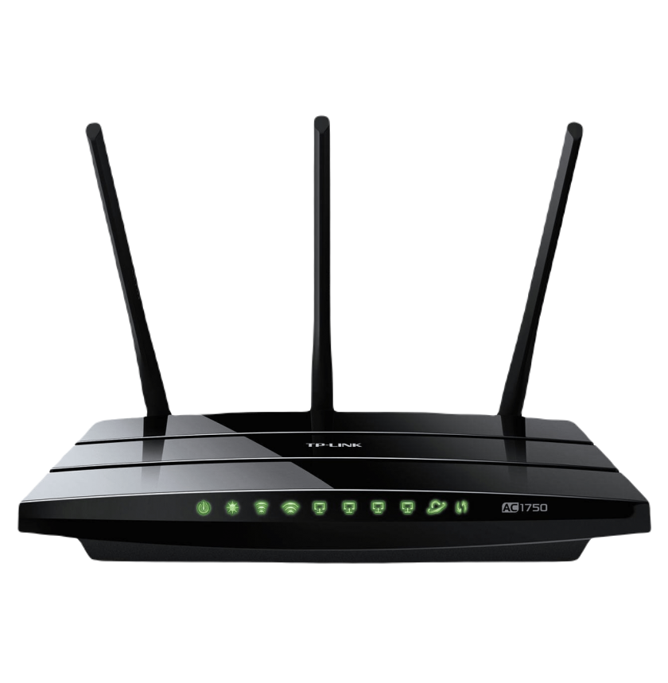
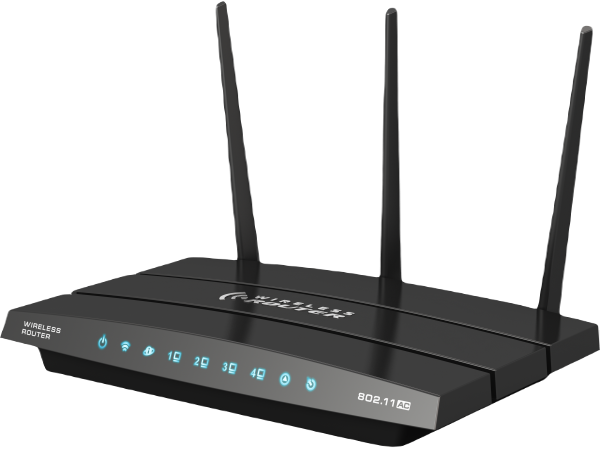
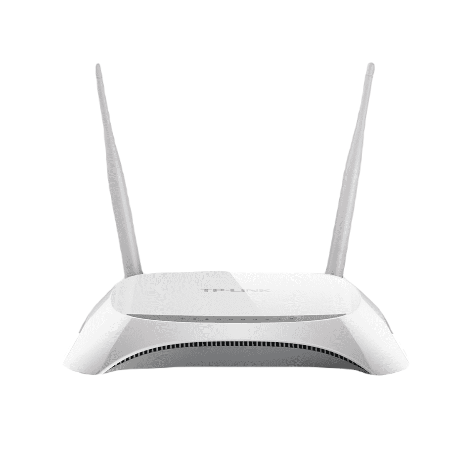
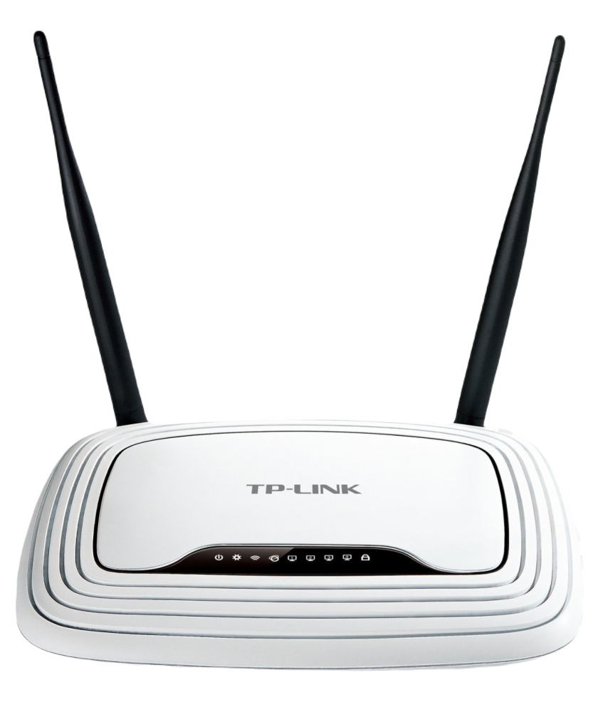

Modem Model: 802 BCA
Modem Model: 404 FTP
Modem Model: Gaming 900
Modem Model: Eclipse TT0
Yüksek hizli baglantinin konforunu beraberinizde istediginiz her yere götürün.
Masaüstü bilgisayarlariniza 'N-Hizli'nin konforunu ve performansini kazandirin.
Böylece baglanti için kullandiginiz metrelerce kablonun daginikligindan da kurtulabilirsiniz.
11N standardiyla çok daha hizli video akisi, dosya paylasimi saglayin. Uzak mesafelerden kolaylikla baglanabilirsiniz.
Her zaman yaninizda tasiyabileceginiz kadar küçük Air 2315’un kurulumu Kolay Kurulum CD’si ile çok kolaydir.
Air 2310 tüm 802.11b/g erisim noktalari ile uyumludur. Ayrica, 11N standardina uygun modemler ile 150 Mbps hizina ulasabilen,
kesintisiz veri iletisimi saglar.
Yüksek hizli kablsuz Internet erisimi. Her yerde. Her zaman.
Harici anten
11N uyumlu mdem ve erisim nktalariyla 150 Mbps’e ulasabilen kablsuz veri aktarimi
802.11b/g cihazlarla geriye dönük tam uyumlu
USB 2.0 teknlojisi ile 480Mbps’e ulasabilen veri aktarim hizi.
Kolay Kurulum CD’si ile kurulum sadece birkaç dakikanizi alir.
300Mbps Kablosuz Bağlantı Hızı gürültüye duyarlı HD Video Akışı gibi uygulamalar için idealdir
MIMO teknolojisi ile daha güçlü sinyal penetrasyonu, daha geniş kapsama alanı, daha iyi ve kararlı performans
WPS™ (Wi-Fi Protected Setup) ile yüksek güvenlikli bağlantıyı kolayca kurma imkanı. Bu Ürün Ne Yapar?
Kablosuz N PCI Express 2.0(x1) Adaptörü TL-WN881ND masaüstü PC'nize takılarak,
PC'nin kablosuz ağa bağlanmasını ve yüksek hızda internete erişimini sağlar.
IEEE 802.11n uyumlu adaptör 300Mbps'a kadar kablosuz hız sağlayarak online oyunlar ve HD video akışları için yüksek performans sağlar.
Kablosuz N Hızı & Menzili MIMO teknolojisine sahip ürün,
geleneksel 11g ürünleri ile karşılaştırıldığında uzak mesafelerdeki ve engeller içerisinde yaşanan sinyal kayıplarını hafifletir.
Hepdinden öte, uzak mesafelerde 11g ürünlerinin sinyal alamadığı noktalarda da kolaylıkla kablosuz ağ erişimi sağlar!
USB 3.0 arayüzü ile 10 kata kadar daha hızlı veri aktarımı
10 kata kadar daha fazla sinyal menzili sunan iki adet çıkarılabilir yüksek kazanımlı anten
En iyi çekim noktasını belirlemek için istenilen yere yerleştirme imkanı sunan USB uzatma kablosu
Gelişmiş Güvenlik - 64/128 bit WEP, WPA, WPA2 WPA3 şifreleme standartları
EZ WPS - WPS düğmesiyle yalnızca 2 adımda Wi-Fi yapılandırma ayarları
Ayarlanabilir kabloyla çekimi artırmak mümkün
Birlikte gelen USB uzatma kablosu sayesinde USB-AC58 adaptörü istediğiniz yere yerleştirebilirsiniz.
Bu özgürlük ile en iyi sinyali bulmak için ince ayar yapabilir ve en iyi çekim gücünü elde edebilirsiniz.
5 kata kadar daha hızlı WiFi: 160 MHz’lik geniş kanallar 5 GHz bandında hızı 1,73 Gbps’e taşıyor.
Tüm cihazlar için en yüksek hız: Dahili MU-MIMO teknolojisi tüm cihazların uygun hızlarda çalışmasını sağlıyor.
Daha hızlı ve geniş kapsama için Bluetooth 5.0: Öncesinden iki kat daha hızlı ve 4 kat daha geniş menzilli Bluetooth veri aktarımı.
Ölü noktaları azaltan harici anten: Kendi başına durabilen alıcı-verici ve bağlantı kablosuyla en iyi çekim seviyesi için kolay konumlandırma imkanı.
Kalabalık Ağlarda Bile 2 Kat Hızlı Wi-Fi
PCE-AC58BT, WiFi 5 (802.11ac) cihazlarının WiFi hızını iki katına,
WiFi 4 (802.11n) ekipmanlarının ise 5 katına ulaşmak için geniş 160 MHz kanallar kullanıyor.
MU-MIMO teknolojisiyle geliştirilen ürün, ev veya ofislerdeki kalabalık ağlara bağlı tüm cihazların yüksek hızlardan yararlanmasını sağlıyor.